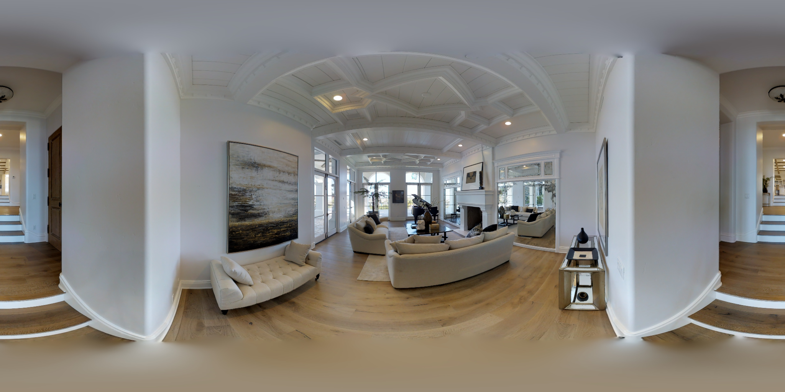

2t7WUuJeko7 · 07 · 门洞确认

主要呈现空间：浴室入口与前厅同时显著
未见人工OOS记录；无辅助历史 0份／半自动历史 0份；可新增英文人员10人
来源、区域关系与复核原话
可见功能区：卫浴、通行
- 浴室与前厅走廊：明确墙体与门洞分隔。旧记录明确浴室门框与前厅相接
原粗类：卫浴；门洞来源：最新整组评论.G004；组号 ['G004']
保留候选34张；OOS待核实3张；明确OOS排除3张。此页只提供选择范围，不表示全部采用。
主要呈现空间、可见功能区、区域关系及相机门洞位置分别记录。主空间描述沿用最新AI续审，人工来源另列；未重新裁定全部原图。无OOS记录不等于已确认可标，疑似OOS暂缓，明确OOS从本轮补充候选排除。一般交界不自动当作门洞。
主要呈现空间：浴室入口与前厅同时显著
未见人工OOS记录；无辅助历史 0份／半自动历史 0份；可新增英文人员10人
可见功能区：卫浴、通行
原粗类：卫浴；门洞来源：最新整组评论.G004；组号 ['G004']

主要呈现空间：卧室门外公共走廊
未见人工OOS记录；无辅助历史 0份／半自动历史 0份；可新增英文人员10人
可见功能区：通行、卧室
原粗类：通行与连接；门洞来源：最新整组评论.G013；组号 ['G013']

主要呈现空间：空置房间与长廊门口并见；主区域待定
未见人工OOS记录；无辅助历史 0份／半自动历史 0份；可新增英文人员10人
可见功能区：用途不明、通行
原粗类：开放复合空间；门洞来源：早期争议复核导出.user_doorway；组号 []

主要呈现空间：长餐桌区及厨房开口
未见人工OOS记录；无辅助历史 6份／半自动历史 0份；可新增英文人员7人
可见功能区：厨房、用餐
原粗类：开放复合空间；门洞来源：早期争议复核导出.user_doorway；组号 ['G011']

主要呈现空间：走廊连接门处为主
未见人工OOS记录；无辅助历史 0份／半自动历史 0份；可新增英文人员10人
可见功能区：通行
原粗类：通行与连接；门洞来源：早期争议复核导出.user_doorway；组号 []

主要呈现空间：空置小房与外走道并见；主区域待定
未见人工OOS记录；无辅助历史 0份／半自动历史 0份；可新增英文人员10人
可见功能区：通行、用途不明
原粗类：通行与连接；门洞来源：早期争议复核导出.user_doorway；组号 ['G038']

主要呈现空间：小卫浴入口与旁侧洗衣区并见
未见人工OOS记录；无辅助历史 0份／半自动历史 0份；可新增英文人员10人
可见功能区：卫浴、储藏家务
原粗类：未定；门洞来源：早期争议复核导出.user_doorway；组号 ['G045']

主要呈现空间：通行为主
未见人工OOS记录；无辅助历史 24份／半自动历史 0份；可新增英文人员0人
可见功能区：通行
原粗类：通行与连接；门洞来源：早期争议复核导出.user_doorway；组号 ['G082']

主要呈现空间：通行为主
未见人工OOS记录；无辅助历史 0份／半自动历史 0份；可新增英文人员10人
可见功能区：通行
原粗类：通行与连接；门洞来源：早期争议复核导出.user_doorway；组号 ['G082']

主要呈现空间：卧室为主
未见人工OOS记录；无辅助历史 6份／半自动历史 0份；可新增英文人员8人
可见功能区：卧室
原粗类：卧室；门洞来源：早期争议复核导出.user_doorway；组号 ['G088']

主要呈现空间：卧室为主
未见人工OOS记录；无辅助历史 2份／半自动历史 0份；可新增英文人员8人
可见功能区：卧室、厨房、储藏家务
原粗类：卧室；门洞来源：早期争议复核导出.user_doorway；组号 ['G107']

主要呈现空间：卧室与其入口共同呈现，床区为主要实质功能
未见人工OOS记录；无辅助历史 1份／半自动历史 0份；可新增英文人员10人
可见功能区：通行、卧室、卫浴
原粗类：卧室；门洞来源：早期争议复核导出.user_doorway；组号 ['G111']

主要呈现空间：卫浴为主
未见人工OOS记录；无辅助历史 20份／半自动历史 0份；可新增英文人员0人
可见功能区：卫浴、卧室
原粗类：未定；门洞来源：早期争议复核导出.user_doorway；组号 ['G123']

主要呈现空间：洗手间门口与前厅并呈
未见人工OOS记录；无辅助历史 3份／半自动历史 0份；可新增英文人员8人
可见功能区：卫浴、通行
原粗类：卫浴；门洞来源：早期争议复核导出.user_doorway；组号 ['G149']

主要呈现空间：卧室与双盆洗漱区共同呈现
未见人工OOS记录；无辅助历史 0份／半自动历史 0份；可新增英文人员10人
可见功能区：卧室、卫浴
原粗类：未定；门洞来源：早期争议复核导出.user_doorway；组号 ['G159']

主要呈现空间：卧室入口台阶与床区并呈
未见人工OOS记录；无辅助历史 0份／半自动历史 0份；可新增英文人员10人
可见功能区：卧室、通行
原粗类：卧室；门洞来源：最新整组评论.G174；组号 ['G173', 'G174']

主要呈现空间：洗漱／淋浴为主；前室可见
未见人工OOS记录；无辅助历史 24份／半自动历史 0份；可新增英文人员0人
可见功能区：卫浴、通行、储藏家务
原粗类：卫浴；门洞来源：早期争议复核导出.user_doorway；组号 ['G185', 'G186']

主要呈现空间：入口交接处为主；内侧洗漱空间和柜体次要可见
未见人工OOS记录；无辅助历史 0份／半自动历史 0份；可新增英文人员10人
可见功能区：通行、卫浴
原粗类：通行与连接；门洞来源：最新整组评论.G189；组号 ['G188', 'G189']

主要呈现空间：洗漱区与更衣前室交接并重
未见人工OOS记录；无辅助历史 23份／半自动历史 0份；可新增英文人员0人
可见功能区：卫浴、储藏家务、通行
原粗类：卫浴；门洞来源：早期争议复核导出.user_doorway；组号 ['G185', 'G190']

主要呈现空间：客厅入口为主
未见人工OOS记录；无辅助历史 0份／半自动历史 0份；可新增英文人员10人
可见功能区：起居休闲
原粗类：起居与休闲；门洞来源：最新整组评论.G172；组号 ['G172']

主要呈现空间：入口交接处为主；内侧洗漱空间和柜体次要可见
未见人工OOS记录；无辅助历史 5份／半自动历史 0份；可新增英文人员7人
可见功能区：通行、卫浴
原粗类：通行与连接；门洞来源：最新整组评论.G189；组号 ['G189']

主要呈现空间：长廊与楼梯平台玻璃门
未见人工OOS记录；无辅助历史 23份／半自动历史 0份；可新增英文人员0人
可见功能区：通行
原粗类：通行与连接；门洞来源：早期争议复核导出.user_doorway；组号 ['G240', 'G241']

主要呈现空间：红墙卧室门口
未见人工OOS记录；无辅助历史 0份／半自动历史 0份；可新增英文人员10人
可见功能区：卧室、通行
原粗类：卧室；门洞来源：最新整组评论.G236；组号 ['G236']

主要呈现空间：衣帽间门口
未见人工OOS记录；无辅助历史 0份／半自动历史 0份；可新增英文人员10人
可见功能区：通行、储藏家务
原粗类：储藏与家务辅助；门洞来源：早期争议复核导出.user_doorway；组号 ['G247']

主要呈现空间：上层卫浴入口
未见人工OOS记录；无辅助历史 0份／半自动历史 0份；可新增英文人员10人
可见功能区：通行、卫浴
原粗类：未定；门洞来源：早期争议复核导出.user_doorway；组号 ['G248']

主要呈现空间：洗衣凹室及外侧入口
未见人工OOS记录；无辅助历史 0份／半自动历史 0份；可新增英文人员10人
可见功能区：储藏家务、通行
原粗类：储藏与家务辅助；门洞来源：用户逐组讨论.B01；按后续工作分类更新；组号 ['G008']

主要呈现空间：衣帽间入口与套间过渡区并见，主区域待定
未见人工OOS记录；无辅助历史 0份／半自动历史 0份；可新增英文人员10人
可见功能区：储藏家务、通行
原粗类：储藏与家务辅助；门洞来源：早期争议复核导出.user_doorway；组号 ['G017']

主要呈现空间：单人办公室门内为主
未见人工OOS记录；无辅助历史 0份／半自动历史 0份；可新增英文人员10人
可见功能区：工作学习、通行
原粗类：工作与学习；门洞来源：早期争议复核导出.user_doorway；组号 ['G023']

主要呈现空间：洗漱更衣过渡区域为主，保留旧通行视角描述
未见人工OOS记录；无辅助历史 24份／半自动历史 0份；可新增英文人员0人
可见功能区：卫浴、储藏家务
原粗类：通行与连接；门洞来源：早期争议复核导出.user_doorway；组号 []

主要呈现空间：通行为主
未见人工OOS记录；无辅助历史 24份／半自动历史 0份；可新增英文人员0人
可见功能区：通行
原粗类：通行与连接；门洞来源：早期争议复核导出.user_doorway；组号 ['G095']

主要呈现空间：卧室为主
未见人工OOS记录；无辅助历史 2份／半自动历史 0份；可新增英文人员8人
可见功能区：卧室、厨房、储藏家务
原粗类：卧室；门洞来源：用户逐组讨论.B07；按后续工作分类更新；组号 ['G102']

主要呈现空间：洗手台为主，健身房入口可见
未见人工OOS记录；无辅助历史 0份／半自动历史 0份；可新增英文人员10人
可见功能区：卫浴、特殊用途
原粗类：卫浴；门洞来源：早期争议复核导出.user_doorway；组号 ['G140']

主要呈现空间：床区与室内入口凹区并呈；保留用户两区视点描述
未见人工OOS记录；无辅助历史 24份／半自动历史 0份；可新增英文人员0人
可见功能区：卧室、通行
原粗类：通行与连接；门洞来源：用户逐组讨论.B13；按后续工作分类更新；组号 ['G145']

主要呈现空间：地毯卧室门口
未见人工OOS记录；无辅助历史 0份／半自动历史 0份；可新增英文人员10人
可见功能区：卧室、通行
原粗类：卧室；门洞来源：早期争议复核导出.user_doorway；组号 ['G251', 'G252']

主要呈现空间：厨房外过渡走道为主要空间（沿用人工focus）；客餐厅及隔门厨房为邻区
人工疑似或争议；无辅助历史 0份／半自动历史 0份；可新增英文人员10人
可见功能区：通行、起居休闲、用餐、厨房
原粗类：通行与连接；门洞来源：早期争议复核导出.user_doorway；组号 ['G158']
这个疑似是oos

主要呈现空间：厨房与用餐共同为主，起居次要
人工疑似或争议；无辅助历史 24份／半自动历史 0份；可新增英文人员0人
可见功能区：起居休闲、用餐、厨房
原粗类：厨房与用餐；门洞来源：早期争议复核导出.user_doorway；组号 ['G049']
疑似oos,这些图很多人标过的

主要呈现空间：起居休闲为主
人工疑似或争议；无辅助历史 24份／半自动历史 0份；可新增英文人员0人
可见功能区：起居休闲、用餐（跨视点证据）
原粗类：起居与休闲；门洞来源：早期争议复核导出.user_doorway；组号 ['G049']
疑似oos,这些图很多人标过的

主要呈现空间：卫浴为主
人工曾明确OOS；无辅助历史 3份／半自动历史 0份；可新增英文人员10人
可见功能区：卫浴、卧室
原粗类：卫浴；门洞来源：早期争议复核导出.user_doorway；组号 ['G120', 'G121']
这图是连接浴室和卧室的,但是这图算oos了

主要呈现空间：厨房与用餐共同为主，起居次要
人工曾明确OOS；另有疑似意见；无辅助历史 5份／半自动历史 0份；可新增英文人员10人
可见功能区：起居休闲、用餐、厨房
原粗类：厨房与用餐；门洞来源：早期争议复核导出.user_doorway；组号 ['G049']
不是门框但是有那个效果 , 这图算oos
疑似oos,这些图很多人标过的

主要呈现空间：卫浴为主
人工曾明确OOS；无辅助历史 2份／半自动历史 0份；可新增英文人员10人
可见功能区：卫浴、卧室
原粗类：卫浴；门洞来源：早期争议复核导出.user_doorway；组号 ['G120']
oos,和01一样